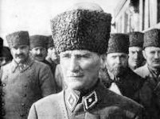

Mısır, Doğu ve Batı uygarlıklarının en büyük kültür merkezidir. Mısır'ın bu uygarlıklara kattığı en büyük servet, Osiris düzenidir. Bu düzen insanların birbirleriyle olan bağlarının korunmasına yönelik bir anlayıştır.
Uygur Türkleri, nesillerdir Atlantis'in soyunu sürdürmektedir. Ancak geçmişteki uygarlık hakkında ve onun gerçekleriyle ilgili hiçbir bilgi bugüne kadar ortaya çıkarılamamıştır ya da çıkartılmak istenmemiştir. Hatta öyle ki, Uygur Türkleri bilinen en eski Türk kavmi olmasına rağmen; Türk soylarından ayrı ve daha farklı oldukları gösterilmeye çalışılmış; gerçek Türk soyları ile ilişkilendirilmemesi gerektiği özenle belirtilmiştir.
Şimdi Osiris'in tüm gerçekleri suların üzerine çıkmış, keşfedilmeyi beklemektedir. Bunu kanıtlayacak ve ortaya çıkaracak tüm belge ve bilgiler halen varlığını sürdürmekle beraber, yazılanların ışığında gün yüzüne çıkacaktır.

Osiris ve onun soyuna en yakın medeniyet, Türk soyudur. Uzun zaman önce Atatürk tarafından başlatılmış olan araştırmaların sonucu, bu kitapta anlatılarak gerçek sonuç açıklanmaktadır.